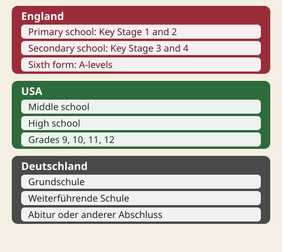

Schulsysteme in England und den USA
Mit einem KI-Tutor lernen
Ein KI-Tutor erklärt dir diese Seite und hilft dir bei den Aufgaben. Wähl deinen Assistenten:
Mit Claude öffnen Mit ChatGPT öffnen Mit Mistral Vibe öffnen
Du nutzt dein eigenes Konto beim Anbieter. Der Assistent ist kein Angebot von lernapps.net: lernapps liefert nur Inhalte und Aufgaben. Die Wahl gilt für alle Seiten, nur auf diesem Gerät.
Worum es geht
Für einen Lebenslauf musst du deinen Schulabschluss erklären. Dazu liest du, wie Sophie Mr Anderson ihre Schule beschreibt. Danach kannst du die Schulsysteme in England und den USA mit ihren Abschlüssen beschreiben und mit Deutschland vergleichen.
Aufgabe
Lösung
Die Schüler sind elf Jahre alt
Year ist kein Alter. Es zählt die Schuljahre, und Schüler in Year 11 sind meist deutlich älter als elf.
Die Schüler sind in Klasse 11 wie in Deutschland
Die Zählung ist anders. Year 1 und Klasse 1 beginnen nicht im selben Alter, darum passt Year 11 nicht zu Klasse 11.
Die Schüler sind im elften Schuljahr der englischen Schule richtige Antwort
Richtig: Year 11 ist ein Schuljahr, kein Alter.
Year und grade sind Jahrgänge. Sie sagen nichts direkt über das Alter und sind nicht gleich der deutschen Klasse.
Lesestück · Sophies Nachricht an Mr Anderson
Lies die Nachricht in drei Abschnitten. Die Zahlen vor den Zeilen brauchst du bei den Aufgaben. Schwere Wörter stehen hier.
| Englisch | Deutsch |
|---|---|
| sixth form | die Oberstufe in England, zwei Jahre nach Year 11 |
| credit | der Leistungspunkt für einen bestandenen Kurs |
| primary school | die Grundschule in England |
| secondary school | die weiterführende Schule |
| qualify | berechtigen |
- Message from Sophie to Mr Anderson
- Dear Mr Anderson,
- Thank you for your advice about the job. School systems are different, so I want to explain them in a short message.
- In England, children start at primary school, which has Key Stage 1 and Key Stage 2. Secondary school has Key Stage 3 and Key Stage 4 for students from 11 to 16 years old.
- At the end of Year 11, students take exams called GCSEs. After that, young people must stay in education or training until the age of 18. Many of them go to sixth form and study for A-levels.
Aufgabe
Lösung
Sie müssen sofort einen Beruf lernen
Zeile 5 sagt education or training. Ein Beruf ist nur eine von mehreren Möglichkeiten.
Sie müssen weiter lernen oder eine Ausbildung machen richtige Antwort
Richtig: Nach Zeile 5 bleiben sie in Bildung oder Ausbildung bis 18.
Sie müssen ein Studium beginnen
Ein Studium kommt später. Zeile 5 nennt als nächsten Schritt sixth form und A-levels.
Bis zum Alter von 18 bleibt man in Bildung oder Ausbildung, zum Beispiel in der sixth form.
- In the USA, most high schools have grades 9 to 12. The four years have names: freshman, sophomore, junior and senior.
- Students get credits for every course they pass, and the school works out a GPA, the average of their grades. A student needs enough credits to finish high school.
- Be careful with the word "college". In the USA, people often use it for a university. In England, a college can also be a school for older students who study for A-levels, a sixth form college.
Aufgabe
Lösung
Zeile 6
Zeile 6 nennt grades und die vier Namen der Jahre, nichts über college.
Zeile 7
Zeile 7 erklärt credits und GPA. Das Wort college kommt dort nicht vor.
Zeile 8 richtige Antwort
Zeile 8 beginnt mit Be careful und erklärt, was college in den USA und in England heißen kann.
Zeile 8 sagt, dass college nicht überall dasselbe bedeutet.
- In Germany, I went to a Grundschule first. At home I go to a Gymnasium, which ends with an exam called the Abitur. Both the A-levels and the Abitur qualify students for university.
- I hope this helps. Yours sincerely, Sophie Weber
Offene Aufgabe
In England gibt es GCSE-Prüfungen am Ende von Year 11. In den USA sammelt man Credits in jedem Kurs. Welche Idee gefällt dir besser? Schreibe zwei bis drei Sätze auf Englisch.
Eine gute Antwort enthält:
- Du entscheidest dich für das englische oder das amerikanische System. Nachlesen
- Du gibst einen Grund mit because. (Form)
- Du schreibst in ganzen Sätzen. (Form)
Lösung
I like the American idea better because you get credits for every course. You do not have to wait for one big exam. Die App bewertet deinen Text nicht. Vergleiche ihn mit den Punkten.
Schulstufen im Vergleich

© CC-BY-4.0Lies jeden Kasten von oben nach unten. Die Stufen der Länder sind verschieden, auch wenn sie ähnlich klingen.
In England zählst du Years und Key Stages, in den USA grades. Ein Year oder ein grade ist ein Schuljahr, nicht dein Alter. Grade 9 entspricht ungefähr Year 10. Am Ende der weiterführenden Schule stehen in England die GCSE-Prüfungen, danach folgen in der sixth form die A-levels. In den USA schließt du nach grade 12 die High School ab. Für Deutschland reichen grobe Stufen: Grundschule, weiterführende Schule und ein Abschluss wie das Abitur.
In den USA geht vor der High School die middle school (steht im Bild über der High School), und an der High School haben nicht alle dieselben Kurse: Neben Pflichtfächern wählst du Wahlfächer. Mehr zum Alltag an einer High School steht auf der Lernlandkarte von lernapps.net.
Merke
Das Wort college gibt es in beiden Ländern, aber mit anderer Bedeutung. Setze es nicht einfach mit „Hochschule“ gleich, sondern frage, aus welchem Land der Text kommt.
Übung
Aufgabe
Lösung
Richtige Antwort: GCSE – Prüfungen am Ende von Year 11; GPA – Notendurchschnitt aus den Kursen; credit – Punkte für einen bestandenen Kurs; senior – Schüler im letzten Jahr der High School
GCSE und A-levels gehören nach England, GPA und credits in die USA. Senior ist das vierte Jahr der High School.
Aufgabe
Lösung
Sie besucht eine weiterführende Schule
Eine weiterführende Schule heißt in den USA high school. College meint dort meist das Studium.
Sie macht eine Ausbildung in einem Betrieb
Für eine Ausbildung im Betrieb sagt man training oder apprenticeship, nicht college.
Sie studiert an einer Hochschule richtige Antwort
Richtig: In den USA sagen viele college für die Hochschule.
In den USA ist ein college oft eine Hochschule. In England meint das Wort manchmal eine Schule für ältere Schüler.
Aufgabe
Lösung
Richtige Antwort: 1. I start high school as a freshman., 2. In my second year I am a sophomore., 3. In my third year I am a junior., 4. In my last year I am a senior.
Die Jahre heißen freshman, sophomore, junior und senior, vom ersten bis zum letzten Jahr.
Aufgabe
Schreibe zu jedem Cue einen Satz über Schulstufen. Du darfst Wörter ergänzen.
Tipp
Denke an in vor Year, an grades bei den USA und an to oder for nach apply.
- she / be / Year 10
- USA / high school / grades 9 to 12
- Abitur / apply / university
Lösung
- She is in Year 10.
- In the USA, high school has grades 9 to 12. (auch richtig: In the USA, high schools have grades 9 to 12.; In the US, high school has grades 9 to 12.; In the US, high schools have grades 9 to 12.; In the United States, high school has grades 9 to 12.; In the United States, high schools have grades 9 to 12.)
- With the Abitur you can apply to a university.
Year gehört zu England, grade zu den USA. Mit apply to bewirbst du dich bei einer Hochschule.
Aufgabe
Höre den Satz und schreibe ihn auf.
- KI
- KI
- KI
Lösung
- Every school system has its own words and levels.
- Many young people continue their education after the exams.
- Your school report tells other people about your education.
Die Sätze zeigen, wie man über Schule und Abschluss spricht.
Selbst sprechen und schreiben
Aufgabe
Höre die Sätze und sprich sie nach. So kannst du deine Schule erklären.
- I will describe my school in a few sentences.KI
- Please explain the difference between the two systems.KI
- In my country, students leave school at different ages.KI
Zum Aufnehmen braucht diese Aufgabe JavaScript. Die Beispiele kannst du auch ohne anhören.
Lösung
- I will describe my school in a few sentences.
- Please explain the difference between the two systems.
- In my country, students leave school at different ages.
Offene Aufgabe
Erkläre deinen Schulabschluss so, dass ihn ein Mensch in England oder den USA versteht, zum Beispiel für einen Lebenslauf. Schreibe zwei bis drei Sätze auf Englisch.
Eine gute Antwort enthält:
Lösung
I go to a Realschule in Germany. The school finishes with an exam called the Mittlere Reife after year ten. In England, students take their GCSEs at about the same age. Die App bewertet deinen Text nicht. Vergleiche ihn mit den Punkten.
Wie es weitergeht
Du kannst jetzt deinen Abschluss erklären. Auf der nächsten Seite schreibst du eine formelle E-Mail: Sophie hat die Schule erklärt und stellt Mr Anderson nun ihre Fragen zur Stelle.
Fehler gefunden oder eine Idee für diese App?